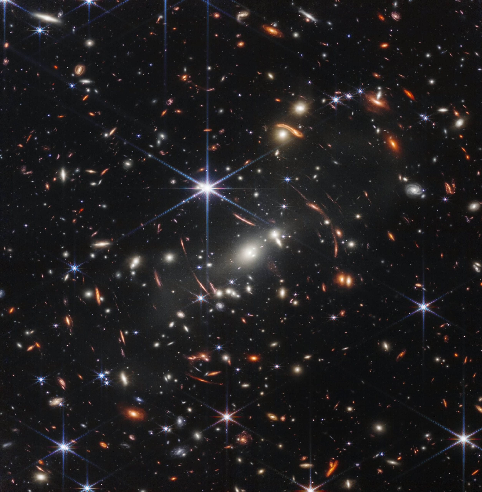

ဒီ ဓါတ်ပုံကို အခုထိ ရိုက်ကူးခဲ့ သမျှ ဓါတ်ပုံတွေ ထဲမှာ အဝေးဆုံး၊ အနက်ရှိုင်းဆုံး အင်ဖရာရက် အနီအောက် ရောင်ခြည် ဓါတ်ပုံ ဖြစ်တယ်လို့ ဆိုပါတယ်။
ဒီဓါတ်ပုံမှာ ပါဝင်တဲ့ ဂလက်ဆီ တွေဟာ ဘယ်လောက်တောင် ဝေးလဲဆိုရင် သူတို့ဆီက အလင်းဟာ ကမ္ဘာကို ရောက်ဖို့ နှစ်သန်းပေါင်း ထောင်ပေါင်းများစွာ ကြာမြင့်ပါတယ်။
အလင်းဟာ တစ်စက္ကန့်ကို ကီလိုမီတာ ၃ သိန်း (မိုင် အားဖြင့် ၁၈၆,၀၀၀) ခန့် ပြေးပါတယ်။ ဒီတော့ ဒီ ဂလက်ဆီတွေ ဘယ်လောက်တောင် ဝေးမလဲ ဆိုတာ မှန်းဆ ကြည့်နိုင်ပါတယ်။
ဒီ ဖွင့်လှစ် ပြသပွဲမှာ သမတကြီး ဘိုင်ဒင်က အခုလို ပြောကြား ခဲ့ပါတယ်။
“ဒီ ဓါတ်ပုံတွေဟာ ကျွန်တော်တို့ကို အမေရိကန် ပြည်ထောင်စုဟာ ကြီးမားတဲ့ စွမ်းဆောင်ရည် တွေကို ပြုလုပ်နိုင်စွမ်း ရှိတယ် ဆိုတာ အမှတ်ရ စေမှာ ဖြစ်ပါတယ်။ ပြီးတော့ အမေရိကန် နိုင်ငံသားတွေ၊ အထူးသဖြင့် ကျွှန်တော်တို့ရဲ့ ကလေးတွေကို ဘယ်အရာမှ ကျွန်တော်တို့ရဲ့ စွမ်းဆောင်နိုင်စွမ်း ပြင်ပမှာ ရှိမနေဘူး ဆိုတာ အမှတ်ရ စေမှာ ဖြစ်ပါတယ်။”
“အရင် ဘယ်သူကမှ မမြင်တွေ့ခဲ့ရတဲ့ အခွင့်အလမ်း တွေကို မြင်တွေ့နိုင်မှာ ဖြစ်ပါတယ်။ အရင် ဘယ်သူမှ မရောက်ဖူး ခဲ့တဲ့ နေရာတွေကို ရောက်ရှိနိုင် ကြမှာ ဖြစ်ပါတယ်။”
ဒီ ဂျိမ်စ်ဝက်ဘ် တယ်လီစကုပ် ကြီးဟာ တန်ဖိုးအားဖြင့် ဒေါ်လာ ၁၀ ဘီလီယံ (၁ ဘီလီယံ = သန်း ၁၀၀၀) ခန့် တန်ဖိုးရှိပါတယ်။ သူ့ကို ပြီးခဲ့တဲ့ ဒီဇင်ဘာ ၂၅ တုန်းက လွှတ်တင် ခဲ့တာ ဖြစ်ပါတယ်။
ဆက်စပ်ဆောင်းပါး – စကြာဝဠာရဲ့ မူလအစကို ရှာဖွေပေးမယ့် James Webb တယ်လီစကုပ်ကြီး
ဒီ တယ်လီစကုပ် ကြီးဟာ သူ့အရင် ဟတ်ဘယ် တယ်လီစကုပ်ကြီး ရဲ့ တာဝန်တွေကို ဆက်လက် တာဝန်ထမ်းဆောင် သွားမှာ ဖြစ်ပါတယ်။
ဂျိမ်စ်ဝက်ဘ် တယ်လီစကုပ် ကြီးကို ရည်ရွယ်ချက် နှစ်ခုနဲ့ အထူးပြု တည်ဆောက် ထားခဲ့တာ ဖြစ်ပါတယ်။

{kind=link}
ပထမ တစ်ခုကတော့ စကြာဝဌာ အစဦးက အစောပိုင်း မှာ ပထမဆုံး မွေးဖွားလာ ခဲ့တဲ့ ကြယ်တွေရဲ့ ဓါတ်ပုံကို ရိုက်ယူဖို့ ဖြစ်ပါတယ်။
နောက် ရည်ရွယ်ချက် ကတော့ အဝေးက ဂြိုဟ်တွေမှာ သက်ရှိတွေ မှီတင်း နေထိုင်နိုင်စွမ်း ရှိမရှိ ဆိုတာကို လေ့လာဖို့ ဖြစ်ပါတယ်။
အခု နာဆာက ထုတ်ပြန်လိုက်တဲ့ ဂျိမ်းစ်ဝက်ဘ်ရဲ့ ပထမဆုံး ဓါတ်ပုံဟာ ကမ္ဘာ့ တောင်ဖက်ခြမ်းမှာ တည်ရှိတဲ့ ဗိုလန် တာရာ (constellation of Volans) အတွင်းက ဂလက်ဆီ ကြယ်စု အစုအဝေးကြီးရဲ့ ဓါတ်ပုံ ဖြစ်ပါတယ်။
ဒီ ဂလက်ဆီ အစုအဝေးကို နက္ခတ် ပညာရှင် တွေက SMACS 0723 လို့ အမည် ပေးထားပါတယ်။
ဒီ ဂလက်ဆီ အုပ်စုဟာ တကယ်တော့ ကမ္ဘာကနေ ဒီလောက်ကြီး ဝေးလှတာ မဟုတ်ပါဘူး။ အကွာအဝေး အားဖြင့် အလင်းနှစ် ၄.၆ ဘီလီယံ (သန်း ၄,၆၀၀) ခန့်ပဲ ကွာဝေးပါတယ်။
ဒါပေမယ့် ဒီပုံရဲ့ ထူးခြားချက်က ဒီ ဂလက်ဆီ အုပ်စုရဲ့ ကြီးမားတဲ့ ဆွဲငင်အား (gravity) ကြောင့် သူ့နောက်က ပိုဝေးတဲ့ အရပ်က ဂလက်ဆီ တွေဆီက လာတဲ့ မှိန်ဖျော့ဖျော့ အလင်းဟာ ကွေးသွားတာပဲ ဖြစ်ပါတယ်။
ဒီလို ကွေးသွားတဲ့ အတွက် ဒီ နောက်ခံ ကြယ်တွေရဲ့ အလင်းကို ချဲ့ပေးလိုက် သလို ဖြစ်သွားပါတယ်။ ဒါကို နက္ခတ် ဗေဒမှာ ဆွဲအားမှန်ဘီလူး (Gravitational lensing) လို့ ခေါ်ပါတယ်။

ဒီ နောက်ခံ ကြယ်တွေကို ဒီပုံမှာ ခပ်ကွေးကွေး အလင်းတန်း တွေ အဖြစ် မြင်ကြရမှာ ဖြစ်ပါတယ်။
ဒီ ဂလက်ဆီ ကွေးကွေးလေးတွေ ဟာ မူလက ဒီလို ကွေးနေတာတော့ မဟုတ်ပါဘူး။ သူတို့ဆီက အလင်းက ကြားက ခံနေတဲ့ ဂလက်ဆီ အုပ်စုကြီးရဲ့ ဆွဲငင်အား စက်ကွင်းကို ဖြတ်လာရ တာမို့ ဒီလို ခပ်ကွေးကွေးလေး မြင်ကြရတာ ဖြစ်ပါတယ်။
ဒီ နောက်ခံ ဂလက်ဆီ တွေဟာ Big Bang မဟာ ပေါက်ကွဲမှုကြီး အပြိး နှစ်သန်း ၆၀၀ ခန့်က ဖြစ်တည်ခဲ့တဲ့ အစောဆုံး ဂလက်ဆီတွေ ဖြစ်ကြပါတယ်။ ဒါဟာ ဒီကာလက ဂလက်ဆီ တွေရဲ့ ပုံရိပ်ကို ပထမဆုံး ရိုက်ကူး နိုင်တာပဲ ဖြစ်ပါတယ်။
သိပ္ပံ ပညာရှင် တွေရဲ့ အဆိုအရ ဂျိမ်းစ်ဝက်ဘ် က ဖမ်းယူရရှိတဲ့ အချက်အလက်တွေကို လေ့လာချက် အရ ဒီ တယ်လီစကုပ် ကြီးဟာ ဒီ ဂလက်ဆီ တွေထက် ပိုဝေးတဲ့ အရပ်က အာကာသ ဟင်းလင်းပြင် ထဲကိုပါ မြင်နေရ တယ်လို့ ဆိုပါတယ်။
ဆိုလိုတာက ဒီပုံမှာ တွေ့ရတဲ့ နောက်ခံ ဂလက်ဆီ တွေထက် ပိုဝေးတဲ့ ဟင်းလင်းပြင် ကိုပါ ဂျိမ်းစ်ဝက်ဘ်က ရိုက်ကူး နိုင်ခဲ့တာ ဖြစ်ပါတယ်။

“ဒါ့အပြင် ကျွန်တော်တို့က အခု ပထမဆုံး ပုံမှာ မြင်ရတာထက် ပိုပြီး ဝေးတဲ့ နေရာတွေ အထိ မြင်နိုင်ပါတယ်။ ကျွန်တော်တို့က လွန်ခဲ့တဲ့ နှစ် ၁၃.၅ ဘီလီယံ လောက်အထိ မြင်နိုင်ပါတယ်။ စကြာဝဠာက လွန်ခဲ့တဲ့ နှစ် ၁၃.၈ ဘီလီယံက စခဲ့တာ ဆိုတော့ ကျွန်တော်တို့ဟာ စကြာဝဠာရဲ့ အစဦး ပိုင်းအထိ မြင်နေရတာ ဖြစ်ပါတယ်။”
သူ့အရင် ဟတ်ဘယ် တယ်လီစကုပ် တုန်းက ဒီလို ဓါတ်ပုံမျိုးရဖို့ဆို သတင်းပတ်ပေါင်း များစွာ အချိန်ယူပြီး ရိုက်ယူရမှာ ဖြစ်ပါတယ်။ ဒါပေမယ့် ဂျိမ်းစ်ဝက်ဘ် ကတော့ ဒီဓါတ်ပုံ ရဖို့ အချိန် ၁၂ နာရီ ခွဲပဲ ကြာမြင့် ခဲ့ပါတယ်။
ဂျိမ်းစ်ဝက်ဘ်က ရိုက်ကူးထားတဲ့ ကျန် ဓါတ်ပုံတွေ ကိုတော့ ဒီနေ့ ညနေမှာ ဆက်လက် ထုတ်ပြန် ပေးသွားမယ်လို့ သိရပါတယ်။
ဂျိမ်စ်ဝက်ဘ် ရဲ့ အခြား ရည်မှန်းချက် တစ်ခုကတော့ အဝေးဂြိုဟ် တွေ လေ့လာရေးပဲ ဖြစ်ပါတယ်။
ဂျိမ်းစ်ဝက်ဘ်ဟာ အဝေးက ဓါတ်ငွေ့ဂြိုဟ်ကြီး တစ်လုံးဖြစ်တဲ့ WASP-96 b ဂြိုဟ်ကြီးရဲ့ လေထုကိုလဲ အသေးစိတ် သုတေသန ပြုခဲ့ပါတယ်။ ဒီဂြိုဟ်ဟာ ကမ္ဘာကနေ အလင်းနှစ် ၁၀၀၀ ခန့် အကွာမှာ ရှိတဲ့ ဂြိုဟ်ကြီး တစ်စင်း ဖြစ်ပါတယ်။
ဒီဂြိုဟ်ဟာ သူ့ရဲ့ မိခင်ကြယ်ကို အလွန် နီးကပ်စွာ ကပ်ပြီး လှည့်ပတ် နေတာမို့ သက်ရှိတွေ အသက်ရှင် နေထိုင် နိုင်ဖို့ ဆိုတာကတော့ ဖြစ်နိုင်မှာ မဟုတ်ပါဘူး။ ဒါပေမယ့် တနေ့မှာတော့ ဂျိမ်စ်ဝက်ဘ် ဟာ ကမ္ဘာ့ လေထုနဲ့ အသွင်တူတဲ့ လေထုနဲ့ ဖုံးလွှမ်းနေတဲ့ ဂြိုဟ်တစင်းစင်း ရှာတွေ့ကောင်း ရှာတွေ့ နိုင်လိမ့်မယ်လို့ ပညာရှင် တွေက ယုံကြည် ကြပါတယ်။
Ref: James Webb telescope takes super sharp view of early cosmos | BBC